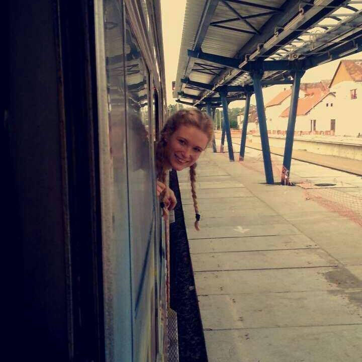
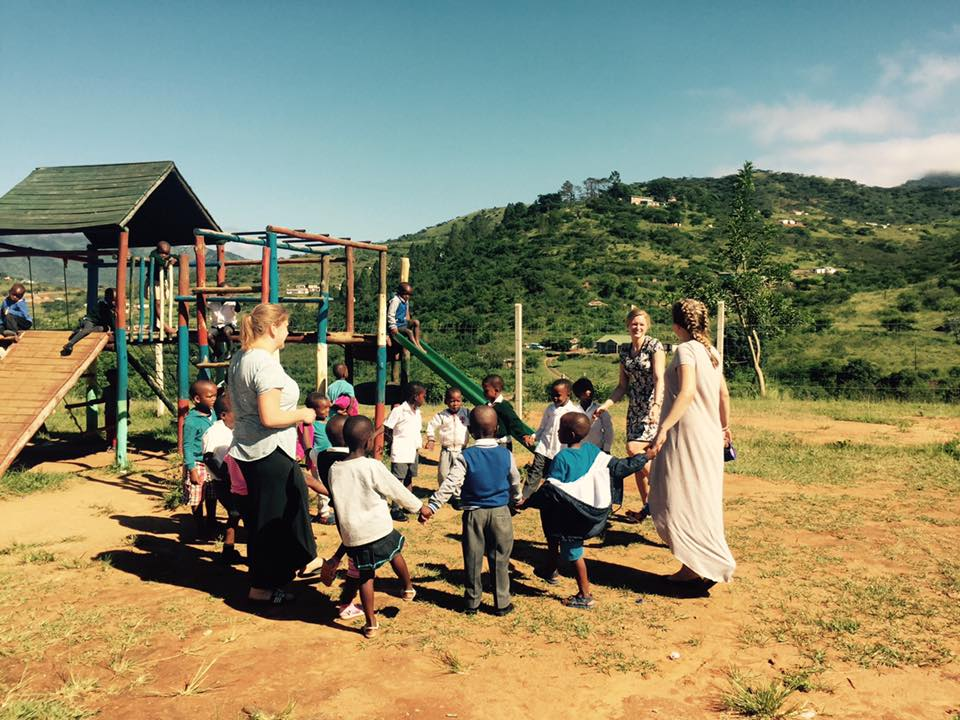

Education for Democracy
Velkommen til min vurderingsmappe i faget Education for Democracy ved Høgskolen på Vestlandet 2017.
Litt om meg
Ulrikke Bergesen
Hvem er jeg? Jeg er en livsglad jente som gleder seg til å bli ferdig med lærerutdannelsen og starte den viktige jobben som lærer i barneskolen.
Veien til lærerstudiene var lang, (jeg rekker å bli hele 31 år før jeg er ferdig), men jeg har med meg mange erfaringer fra tidligere arbeidsliv i bagasjen, og jeg tror disse kan bidra til at jeg blir en bedre lærer.
Før jeg endte opp på skolebenken igjen var jeg innom mange yrker i lengre og kortere perioder. Fellesnevneren her er at jeg alltid har arbeidet i yrker med mennesker i fokus. I barnehage, hjemmesykepleien, bolig for psykisk og fysisk utviklingshemmede og i rusomsorgen har jeg lært mye om ulike mennesker i alle aldre og med sine forskjellige utfordringer. Å arbeide med alle disse unike personene gav meg lysten til å starte på lærerutdannelsen. Deres fortellinger om barndom og skolegang inspirerte meg til å ville bli en lærer som ser, bryr seg genuint, støtter, inkluderer og hjelper barna til å kunne utvikle seg og sine egenskaper slik at de kan får et best mulig liv ut i fra sine forutsetninger.
På privaten har jeg samboer og vi venter vårt første barn sommeren 2018, noe vi gleder oss veldig til. Ellers er jeg en kreativ sjel som elsker alt av håndarbeid og alltid har et prosjekt på gang. Jeg gleder meg til å kunne ta i bruk denne kreativiteten i klasserommet! Jeg er veldig familiekjær og trives godt blant mine nære og kjære, men er også glad i å reise og utforske andre kulturer. Jeg vært så heldig at jeg har hatt muligheten til å reise til «utradisjonelle» reisemål som Kurdistan, Romania og ikke minst Sør-Afrika der jeg tilbragte min ene praksisperiode i studiene. Disse reisene og opplevelsene av andre kulturer på nært hold har gitt meg inntrykk og lærdom som jeg bærer med meg i min forståelse av verden og menneskene i den. Reisingen har nok påvirket min holdning til mangfold må sees på som en ressurs og styrke i samfunnet.
Litt mer om meg og mine tanker vil du få innblikk i gjennom introduksjonsteksten til vurderingsmappen min og oppgavene jeg har skrevet.
Les introduksjonsteksten her.